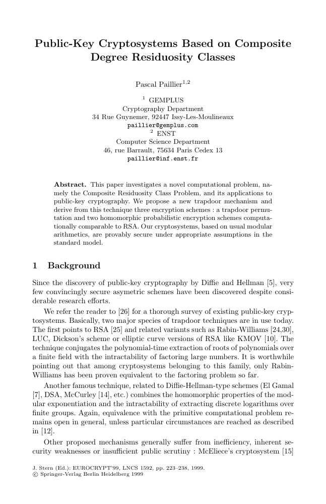

crypto-paillier-001 — page 1

Public-Key Cryptosystems Based on Composite
Degree Residuosity Classes
Pascal Paillier1,2
1
GEMPLUS
Cryptography Department
34 Rue Guynemer, 92447 Issy-Les-Moulineaux
paillier@gemplus.com
2
ENST
Computer Science Department
46, rue Barrault, 75634 Paris Cedex 13
paillier@inf.enst.fr
Abstract. This paper investigates a novel computational problem, na-
mely the Composite Residuosity Class Problem, and its applications to
public-key cryptography. We propose a new trapdoor mechanism and
derive from this technique three encryption schemes : a trapdoor permu-
tation and two homomorphic probabilistic encryption schemes computa-
tionally comparable to RSA. Our cryptosystems, based on usual modular
arithmetics, are provably secure under appropriate assumptions in the
standard model.
1 Background
Since the discovery of public-key cryptography by Diffie and Hellman [5], very
few convincingly secure asymetric schemes have been discovered despite consi-
derable research efforts.
We refer the reader to [26] for a thorough survey of existing public-key cryp-
tosystems. Basically, two major species of trapdoor techniques are in use today.
The first points to RSA [25] and related variants such as Rabin-Williams [24,30],
LUC, Dickson’s scheme or elliptic curve versions of RSA like KMOV [10]. The
technique conjugates the polynomial-time extraction of roots of polynomials over
a finite field with the intractability of factoring large numbers. It is worthwhile
pointing out that among cryptosystems belonging to this family, only Rabin-
Williams has been proven equivalent to the factoring problem so far.
Another famous technique, related to Diffie-Hellman-type schemes (El Gamal
[7], DSA, McCurley [14], etc.) combines the homomorphic properties of the mod-
ular exponentiation and the intractability of extracting discrete logarithms over
finite groups. Again, equivalence with the primitive computational problem re-
mains open in general, unless particular circumstances are reached as described
in [12].
Other proposed mechanisms generally suffer from inefficiency, inherent se-
curity weaknesses or insufficient public scrutiny : McEliece’s cryptosystem [15]
J. Stern (Ed.): EUROCRYPT’99, LNCS 1592, pp. 223–238, 1999.
c Springer-Verlag Berlin Heidelberg 1999